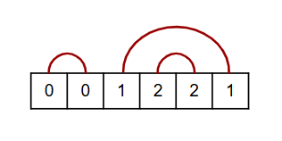

Given an array of $2n$ elements where every value has exactly two occurrences, we say that it is connectable if we can write the array on paper in a row and connect each pair of values from above without intersections.
For example, the array $[0,1,0,1]$ is not connectable, but $[0,0,1,2,2,1]$ is connectable:

Given an array of $2n$ elements where every value has exactly two occurrences, a new array can be formed by either keeping or deleting both occurrences for each value. There are $2^n$ possible resulting arrays. Define the connectivity number of the original array to be the number of connectable arrays out of the $2^n$ resulting arrays.
For example, the connectivity number of $[0,1,0,1]$ is three, while the connectivity number of the following array is $86$: $$[0,1,2,3,1,4,0,5,4,2,6,7,3,8,6,5,9,8,9,7]$$ Attached is an array given as a comma-separated list. The array has $40\,000$ elements consisting of $n=20\,000$ values, each one having two occurences.
Find the connectivity number of the given array. Give your answer modulo $1\,003\,443\,221$.